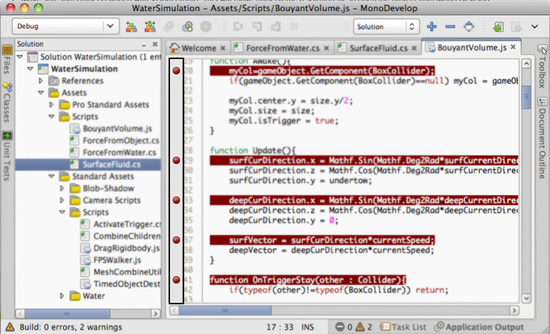
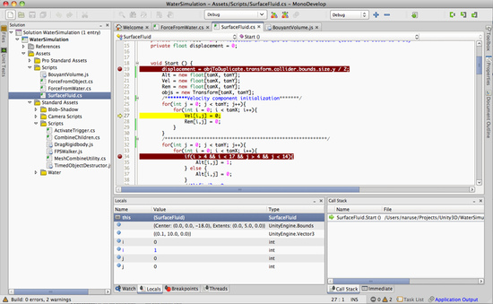

This document is unofficially translated by users.Please see the original document here. 翻訳に関する修正など、ご連絡はこちらまで。 Please send e-mail to here, when you have any question about the translation. |
 編集 (GitHub) |
Debugger
Note: The information on this page applies to the Editor when in desktop mode.
The Unity Debugger lets you inspect your code at runtime. For example, it can help you determine when a function is called and with which values. Furthermore, it allows you to look at the value of scripts variables at a given time while running your game. You can locate bugs or logic problems in your scripts by executing them step by step.
Unity uses the MonoDevelop IDE to debug the scripts in your game. You can debug all the languages supported by the engine (JavaScript, C# and Boo).
Note that the debugger has to load all your code and all symbols, so bear in mind that this can have a small impact on the performance of your game during execution. Typically this overhead is not large enough to affect the game framerate. Note also that when MonoDevelop debugs your project is actually launches Unity.
MonoDevelop window debugging a script in unity.
Debugging in Unity.
Debugging a Unity project is pretty straightforward. You just need to have MonoDevelop installed and follow these steps (note that MonoDevelop is installed on your machine with Unity):-
- Make sure that Unity is Synced with MonoDevelop. This will make Unity create a solution file to open the project from MonoDevelop.
- Open the Unity Project from MonoDevelop by clicking on and Select the .sln file that resides in your Unity project.
- Set the necessary breakpoints on your scripts by clicking the lines that you want to analyze.

- Click the Debug button (In MonoDevelop) when you have finished setting all your breakpoints and wait until Unity gets launched from MonoDevelop
- In case the "Debug" button is grayed out, please check the path of your unity executable. More info in the TroubleShooting page.
- Press the Play button in the Unity Editor and MonoDevelop will start debugging your scripts. Use the three buttons that MonoDevelop provides (Step Over, Step Into, Step Out) for debugging purposes. Also you can use cmd + Enter(Mac OS) / F5 (Windows) for Continue.
- Open the debug View by clicking on and you can start checking the state of the variables.

Hints.
- If you add a watch to the this object, you can inspect the internal values (position, scale, rotation...) of the GameObject to which the script is attached.
- If for some reason you have more than one Unity installation or you want to debug with a certain version of Unity, you can change the Unity executable that Mono Develop loads when debugging; in the Mono Develop preferences go to the Unity/Debugger section and then browse to where your Unity executable is located.